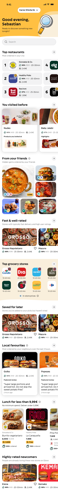
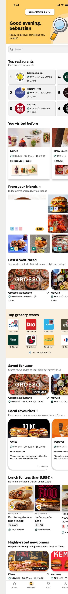

Audit contract: Discover default , empty search, 428 × 3680 CSS px, DPR 1, Chromium, 100% zoom, en-US, light theme. App: http://127.0.0.1:5173/, revision 6b21e4c with local changes. Expected/current captures are preserved originals; annotations are HTML overlays.
9 confirmed root-cause issues 54 failed checks 0 pass 4 unavailable interactive states 0 needs review
Scope: only the supplied mobile home frame is comparable. Search, detail sheet, cart, profile, address sheet, loading and error states have no matching design frame, so they are unavailable—not failures. Pixel differences supported review; dimensions/styles were checked against browser CSS and the matched Penpot export.
01
Hero, address, and search controls use the wrong shape and spacing P1 Expected behaviourPenpot reference
Current behaviourImplementation
Pill-shaped controls, #ffc042 hero, no extra shadows, and a visible bottom curve.
10px/12px radii, #ffcf68 hero, added shadows, and the curve is hidden.

pill geometry & curve 
radius, fill & shadow Source evidence src/styles.css:150–344 (.hero, .address-button, .hero-curve, .search-wrap) Expected: #ffc042; radius 999px; search padding 16px; no shadow. Current: #ffcf68; 10px/12px; altered padding; box shadows; visibility:hidden. Tolerance: exact.
02
Section headings and navigation affordances lose intended emphasis P1 Expected behaviour
Current behaviour
700-weight heading, filled arrow circle, 16px info icon, black active Discover label.
500-weight heading, transparent arrow, 12px info icon, muted active Discover label.
heading & affordances lost emphasis Source evidence src/styles.css:398–430, 1074–1098, 1222–1264 (.arrow-button, .info-button, section heading, nav) Expected/current values: weight 700/500; info 16px/12px; arrow fill #f2f2f3/transparent. Tolerance: exact.
03
Top restaurant ranking cards use incorrect geometry P1 Expected behaviour
Current behaviour
16px cards, 16px padding, 28px rank, rounded-square logos, no card shadow.
6px cards, 10px horizontal padding, 24px rank, circular logos, 3px offset shadow.
card and logo tokens corners, padding & shadow Source evidence src/styles.css:466–570 (.ranked-card, .rank, .ranked-logo, .promo-badge) Expected/current: radius 16px/6px; rank 28px/24px; logo radius 16px/50%; shadow none/3px 3px 0 #16161726. Tolerance: exact.
04
“You visited before” cards have incorrect treatment P1 Expected behaviour
Current behaviour
16px cards with a visible curve, subtle product borders, and varied product rotations.
3px cards, hidden curve, transparent borders, forced rotation, and heavy image shadow.
curve and product treatment flattened treatment Source evidence src/styles.css:626–696 (.visited-section, .card-curve, .tall-card, .mini-product) Expected/current: card radius 16px/3px; product border 2px #1617170d/transparent; rotations 4°, -8°, 10°/first 0°. Tolerance: exact.
05
Friends grid uses incorrect geometry and avatars P1 Expected behaviour
Current behaviour
~8px grid gap, 16px/24px tile corners, circular overlapping avatars, compact 4px price badge.
12px grid gap, 3px tiles, 5px non-overlapping avatars, pill price badge.
tile rhythm and avatar stack gaps, radius & stack Source evidence src/styles.css:708–867 (.friends-grid, .friend-tile, .friend-avatar, .friend-price) Expected/current: gap 7.9779px/12px; avatar radius 50%/5px; overlap -4px/+3px; badge radius 4px/999px. Tolerance: ±1px geometry; exact styles.
06
Restaurant media, save controls, and labels drift from the design P1 Expected behaviour
Current behaviour
16px media, no image shadow, 24px save control, compact 4px exclusive tag and single-line rating.
30px media, added shadow, 16px save control, pill tag, and wrapped ratings.
media, icon and label tokens radius, shadow & wrapping Source evidence src/styles.css:882–957 (.store-card, save control, .exclusive, .rating) Expected/current: media radius 16px/30px; save control 24px/16px; exclusive tag radius 4px/999px; shadow none/0 5px 7px #16161733. Tolerance: exact.
07
Grocery surface loses its curved treatment and tile styling P1 Expected behaviour
Current behaviour
Curved top/bottom surface, 16px logo tiles without shadow, badge offset −4px.
Curves are absent, logo tiles are square with shadow, badge inset is +2px.
curves, tiles and badge missing surface treatment Source evidence src/styles.css:982–1108 (.grocery-section, .grocery-curve, .grocery-logo, .grocery-badge) Expected/current: curves visible/hidden; logo radius 16px/0; shadow none/3px 3px 0 #16161726; badge right/top −4px/+2px. Tolerance: exact.
08
Local-favourite review typography and metadata alignment are wrong P2 Expected behaviour
Current behaviour
Review quote is 16px/20px and “2 hours ago” is left-aligned at 12px.
Review quote is 12px/16px and timestamp is right-aligned.
quote scale & timestamp smaller and misaligned Source evidence src/styles.css:1162–1179 (.review-quote, .review-age) Expected/current: 16px/20px vs 12px/16px; timestamp left 12px vs right 12px. Tolerance: exact.
09
Lunch product rail and promotion labels use the wrong tokens P1 Expected behaviour
Current behaviour
16px rail gap and media radius; left 4px discount, muted old price, yellow delivery tag, 24px ordered icon.
8px rail gap and 4px media; right square discount, bold old price, neutral tag, 16px ordered icon.
rail rhythm and offer labels spacing, radius & labels Source evidence src/styles.css:1182–1292 (.lunch-section, product-card, discount, price, delivery, ordered) Expected/current: rail gap 16px/8px; media radius 16px/4px; ordered icon 24px/16px. Tolerance: ±1px geometry; exact styles.